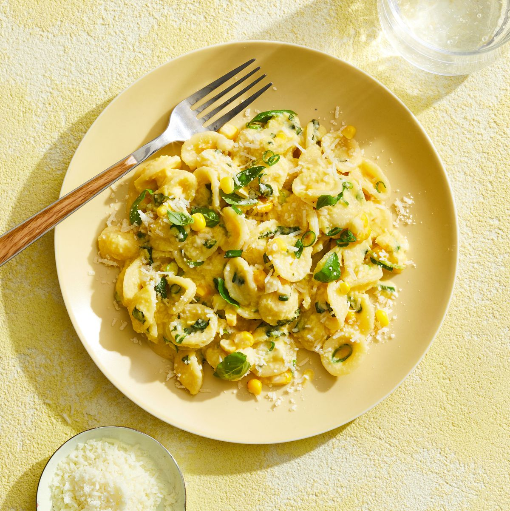

Creamy Corn Pasta

Description
Corn gets puréed with Romano cheese into a creamy sauce to coat orecchiette. Pair it with basil for the ultimate summer pasta.
Ingredients
- Canola oil, for grill grates
- 1 tbsp. red wine vinegar
- 3 tbsp. plus 2 teaspoons olive oil, divided
- Kosher salt and pepper
- 1 small shallot, finely chopped
- 1 c. corn kernels (from 1 large ear, or frozen and thawed)
- 1 pt. mixed-color grape or cherry tomatoes, halved
- 4 6-ounce boneless, skinless chicken breasts
- 2 lb. mixed-color medium and large tomatoes, sliced
- 6 oz. fresh mozzarella, sliced
- 1/4 c. small fresh basil leaves
Steps
- Heat grill to medium-high. Clean grill and lightly oil with canola oil. In bowl, whisk together vinegar, 3 Tbsp olive oil, and 1/2 teaspoon each salt and pepper; stir in shallot. Add corn and grape tomatoes and toss to combine; set aside.
- Rub chicken with remaining 2 teaspoons oil, season with 1/2 teaspoon salt and 1/4 teaspoon pepper, and grill until cooked through, 4 to 6 minutes per side.
- Arrange chicken, sliced tomatoes, and mozzarella on platter. Spoon corn mixture and any juices from bowl over top, then sprinkle with basil.
Go back!